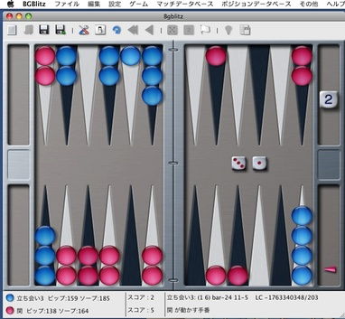
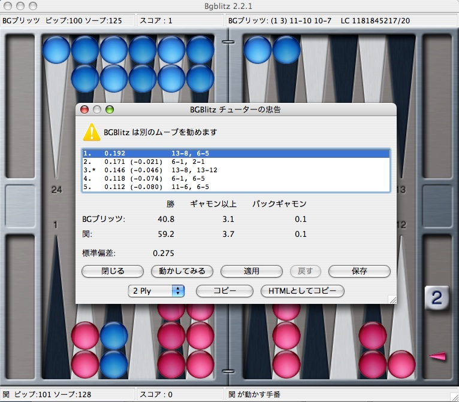

BGBlitz の使い方
|
BGBlitzは、Windows, Mac, Linuxに対応したバックギャモンのソフトです。右の図のように(図をクリックで実寸に拡大)、美しいグラフィックのボードで、気楽にバックギャモンを楽しむことができます。
- ライセンス: フリー版と有料版がある。
- 対応OS: Windows, Mac OS X, Linux 他のUNIX系OS, Mac
- 対応言語: 日本語, 英語 他17の言語
- プログラム言語: Java
- 作者: Frank Berger (ドイツ)
このソフトは日本語化されていますが、ユーザーガイドが英語のため、最初は使い方に戸惑うかもしれません。そこで、このページでは簡単に使い方を解説します。
|

|
ライセンス
BGBlitzには３種類のライセンスがあります。
| ライセンス | 価格 | 機能制限
|
| フリー版 | 無料 | ゲームが6ゲームに1回の確率でランダムに途中で終了する。
チューターによるヒントがプログラム開始から終了までに2回まで。
ロールアウトによる解析が36ゲームまで。
|
| プレイヤー版 | 23ドル | チューターによるヒントがプログラム開始から終了までに2回まで。
ロールアウトによる解析が36ゲームまで。
|
| プロフェッショナル版 | 46ドル | なし
|
フリー版でも、機能制限がそれほど厳しくはないため、かなり楽しむことができます。購入を予定している人も、まずはフリー版をインストールして、動作確認をしましょう。
インストール
Windowsの場合
- ダウンロードページから、Windows 64-Bit X86 のインストーラーをダウンロードします。
- ダウンロードされたインストーラーを実行します。インストーラーの指示にしたがって、インストールを進めます。
Mac OS Xの場合
- ダウンロードページから、Apple Silicon または Intel x86 をダウンロードします。
- ダウンロードが終わると、自動的に圧縮されたディスクイメージの解凍がはじまります。はじまらない場合は、ダウンロードされた
ファイルをダブルクリックして、解凍します。解凍が終わると、ディスクイメージファイルBGBlitz.dmgができます。
- BGBlitz.dmgをダブルクリックして、マウントします。
- マウントされたボリューム(BGBlitz)を開くと、その中にBGBlitzという名前のフォルダがあります。このフォルダを、フォルダごとアプリケーションフォルダにコピーします。
- アプリケーションフォルダ内にコピーされたBGBlitzフォルダを開きます。BGBlitz.app をダブルクリックでプログラムが起動します。
Linux / FreeBSD の場合
使い方
ここでは、コンピュータを相手に遊ぶ方法にしぼって解説します。
まずは、バックギャモンのルール (日本バックギャモン協会) をよく理解しましょう。
設定
- メニューの 設定 → テーマを選ぶ にて「テーマの選択」画面が出ます。ここで、ボードとダイスのセットを選ぶことができます。Titanium (big, Michael) とあるのが、このページの右上にあるテーマで、私のお気に入りです。「テーマのダウンロード」をクリックすると、いろいろなテーマのダウンロードページに飛びます。お好みでどうぞ。なお、テーマをインストールするには、zipファイルをダウンロードして、設定 → zipファイルからテーマをインストール にて、zipファイルを指定します。また、テーマを自作したい人は新しいテーマを作成するにはを参考にしてください。
- メニューの 設定 → 様々な設定 にて、様々な設定ができます。最初の「ボードをダブルクリックすると」のところを、「マネーゲームを開始する」「ポイントマッチを開始する」のどちらかお好みで設定しておくと便利です。どっちにすればいいか分からなければ「マネーゲームを開始する」にするといいでしょう。
- 設定 - ピップカウントを表示する にて、ピップカウント表示と非表示を切り替えることができます。ピップカウントを表示すると、同時にソープカウントも表示されます。ソープカウントは、ピップカウントにチェッカー分布の補正を加えたもので、レースゲームの時のダブル判定に使われるものです。
- 設定メニューの中には、チェッカー速度の調整項目があります。ゲームを進めながら、チェッカー速度を好みで調整するといいです。
- メニューの ゲーム → プレイヤーの設定 で、プレイヤーの設定画面が出ます。赤のプレイヤーのタイプを「人間」とし、名前に自分の名前を入れます。緑のプレイヤーのタイプは、さまざまなAIを選ぶことができます。TachiAI は BGBlitz のAIで、TachiAI V が最新バージョンです。GnuBG を選ぶこともできます。名前はたとえば「コンピュータ」「BGブリッツ」などとします。レベルは初級者からエキスパートまで選ぶことができます。バックギャモンの実戦経験が少ない方は、最初は「初級者」として、慣れてきたら徐々にレベルアップするのがいいと思います。「初級者」でも、最初はなかなか勝てないと思います。「エキスパート」と互角に戦えれば、相当な強さです。
ゲーム開始
- ボードをダブルクリックすることで、ゲームが開始します。マネーゲームが開始するか、ポイントマッチが開始するかは、「設定」でどちらを設定したかによります。
- 右下のステータスバーに「（あなたの名前）がダイスを振るかダブルする手番」とある時には、ダブルするか、あるいはダブルせずにダイスを振るかの判断を求められています。ダブルする場合には、ダブリングキューブをクリックします。ダブルしない場合には、キューブ以外の好きな場所をクリックします。
- チェッカーを動かすには、動かしたいチェッカーをクリックします。その時に、左のダイスの目を使う時は左クリックを、右のダイスの目を使う時は右クリックをします。片方のダイスの目しか使えない場合は、左右どちらをクリックしてもそのダイスの目が使われます。したがって、左の目(大きい目)から順番に左クリックで操作するのが楽です。また、移動先があいていれば、移動先をクリックすることでも動かすことが可能です。さらに、チェッカーをドラッグすることでも移動可能です。
- チェッカーの移動が終わったら、ダイスをクリックすることでムーブが完了します。これは、実戦でダイスを拾い上げる動作に相当します。つまり、ムーブを完了させる前であれば、ムーブの変更が可能です。ムーブの変更をするには、メニューの ゲーム → ムーブのやり直し にて、ムーブする前の状態に戻します。
ゲーム終了
- ゲームが終了すると、「○○の勝ち。○ポイント取得。」といったようなダイアログが出ます。ファイルに保存、データベースに保存、リプレイ、保存しない、から選ぶことができます。
- ゲームを中断するには ゲーム → 終了 とします。
- ゲームを降参するには ゲーム → 投了 とします。シングル負け、ギャモン負け、バックギャモン負けから選ぶことができます。
- ゲーム → ゲーム終了まで自動的に進める とすると、自分の順番と相手の順番を、両方ともコンピュータがゲーム終了まで自動的に進めてしまいます。この時には、ダブリングキューブは使わないようです。ベアオフを自動的にしてもらいたい、といった時に便利です。
- BGBlitz - Quit BGBlitz にて、プログラムを終了できます。
その他の機能
ゲームを再生したり、GamesGrid, FIBS, Snowie 等のファイルを読み込んだり、ファイルを出力したり、htmlとして出力したり、解析（ロールアウト）したり、ナックギャモンをしたり、ベアオフの勝率を計算したり、ポジションデータベースに登録されている問題を解いたり、…等々、色々な機能があります。メニューを色々といじってみてください。
ムーブのヒントを出すチューター機能（下図）は、プロ版を購入するまでは、プログラムの起動から終了までの間に2回だけです。

ダイスにしかけをしてるのでは？
バックギャモンのプログラムは、ダイスがインチキなのではないか、とはよくいわれることです。実際、ダイスはプログラムによって生成されるものなので、そのような疑問を持つことは自然です。実際に不正をしているプログラムもあるかもしれません。それでは、BGBlitzの場合はどうなのでしょうか。
Does it Cheat?には、BGBlitzがダイスに不正なしかけをしてあることを証明できたら、作者が1000ドル払いましょう、と書かれています。そして、しかけをしてあるとすればそれを証明する方法についても記されています。興味のある方は、ここを読んで試してみてください。
ライセンス購入方法
プレイヤー版を購入後に、プロ版へのアップグレードをその差額ですることができますので、どちらを購入するか迷う場合には、まずはプレイヤー版を購入するのがいいと思います。本当にプロ版が欲しくなった時にアップグレードすればいいのです。
How to Buy BGBlitz?のページからPayPalで購入することができます。それぞれ、プレイヤー版(Player version)、プロ版(Professional version)、プレイヤー版からプロ版へのアップグレード(Upgrade from Player to Professional)がありますので、該当するものをクリックします。必要な個人情報、クレジット番号を入力することで、購入できます。
購入が終わると、まずは Paypal からの領収メールが来ますので、そのメールは保存しておきます。さらに、作者の Frank Berger から、英語のメールがきます。メールアドレスは、How to Buyページの右下に書かれている ...@bgblitz.com のアドレスです。題名は、私の場合は Your BGBlitz license というものでした。
このメールには、ライセンスファイルが添付されています。ライセンスファイルの拡張子は license となっています。このファイルを、BGBlitz がインストールされているフォルダにコピーすることで、購入作業が完了します。ライセンスファイルを紛失した場合には、作者にメールすればまた送ってもらえます。
プログラムのバージョンアップにともなうバージョンアップ料金はかかりません。ライセンスファイルをバックアップし、新しいバージョンをインストール後にそのライセンスファイルをインストールフォルダにコピーすれば、アップデートできます。
豆知識
- 2007年の第12回コンピュータオリンピックにて、BGBlitz 2.2.4が優勝しました。
- 思考エンジンのTachiAIという名前は、相撲の「立ち会い」を語源としています。作者のFrankさんは、パリにおける相撲の海外巡業の際にテレビで相撲を見てから、相撲に興味を持ったとのことです。
- BGBlitz のサーバー版は、Play65, GammonEmpire, PartyGammon and 888.com のAIとして採用されているとのことです。Play65のFAQには、「弊社のゲーム自動リソルブ システムは、バックギャモン分析をリードする BGBlitz ソフトウェアに基づいています」と書かれています。
[ 戻る ]
{kind=link}